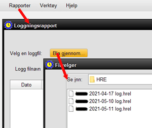

Dette skjermbildet lar brukeren undersøke HRE-aktivitetsloggfilene som opprettes hver gang HRE åpnes, og velge å utføre flere oppgaver på disse filene. 1. Velg RAPPORTER >> LOGGING 2. Klikk på BROWSE for å åpne standardmappen for HRE-loggfiler, som vist 3. En liste over de daglige loggfilene er nå synlige, og dobbeltklikk på noen av disse vil åpne filen, som viser all aktiviteten i HRE den aktuelle dagen 4. Loggfilen kan inneholde store mengder data under overskriftene: Dato, klokkeslett, server (datamaskin), prosjektnavn og loggoppføring. Merk at sistnevnte kolonne kan inneholde programhandlinger samt feil 5. Du kan nå sende logginnholdet, eller en valgt del av det, til en fil eller skriver. Dette kan være verdifullt for teknisk støtte eller gjenopprette trinn som er gjort i en HRE-økt. Til Produksjon Alle eller a Utvalg bruk musen til å markere de valgte linjene i logeksjonen. Målet kan være en fil eller en skriver, inkludert en PDF-fil. Når det er gjort, klikker du på Tilbakestill utvalg for å gjenopprette hele loggfilen for å se igjen, eller tillater valg av en annen loggfil 6. Lukk loggingsvinduet når du er ferdig. |
|
Relaterte temaer |